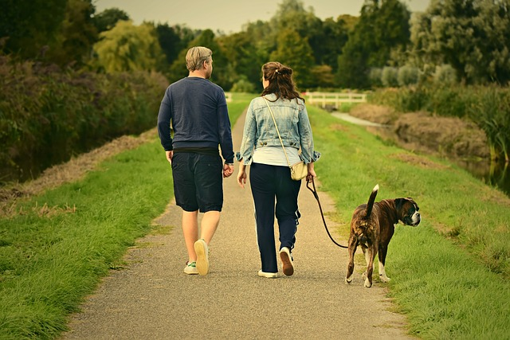

Requirements to adopt a dog.
Are you considering adopting a pet? Many people want to adopt an animal but do not know how. Know what steps you should follow. Many animals need your help. Abandoned, injured or abused pets are waiting for a foster home that loves them. If you commit to being a good owner and you are determined to adopt, you can consult the animal protection website and go to the shelters. Find out how the adoption policy of
Read more...